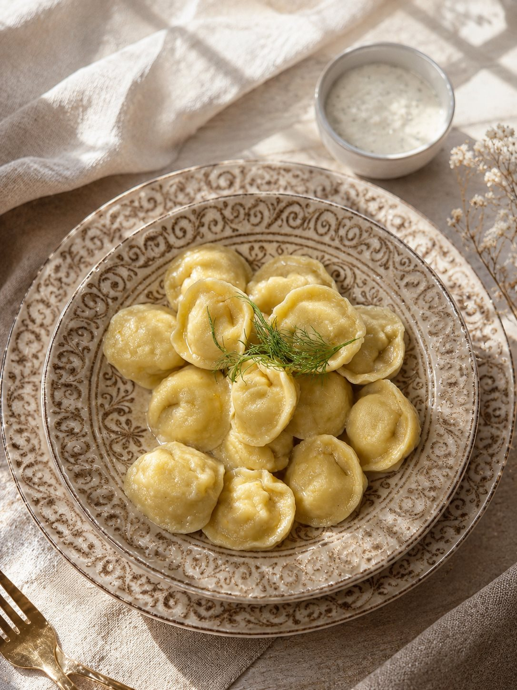
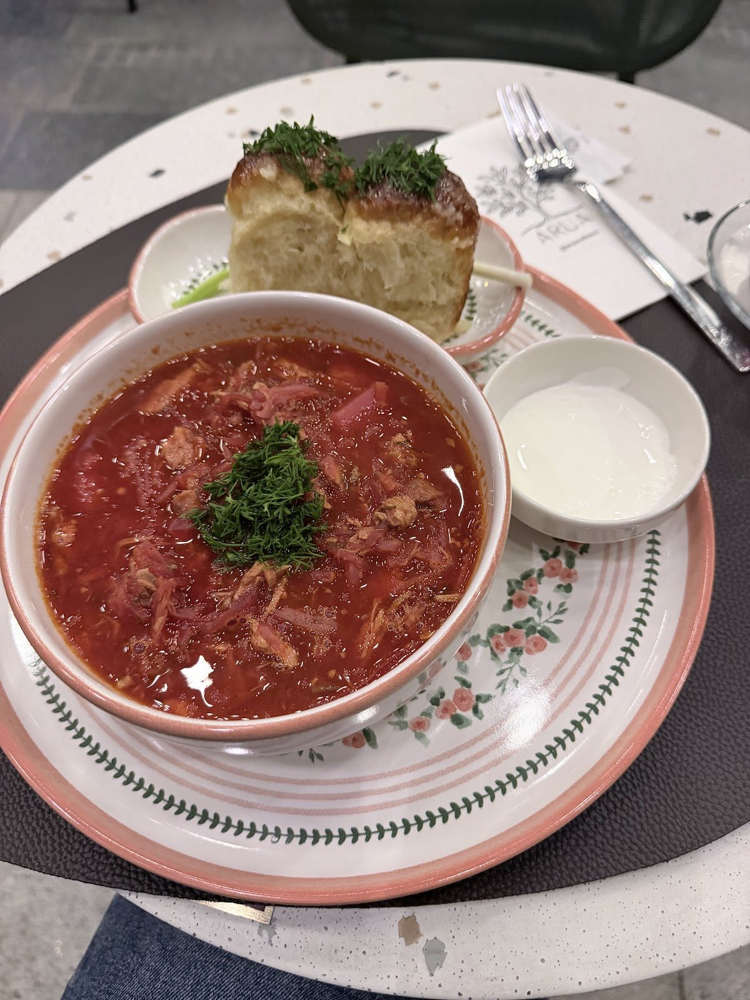
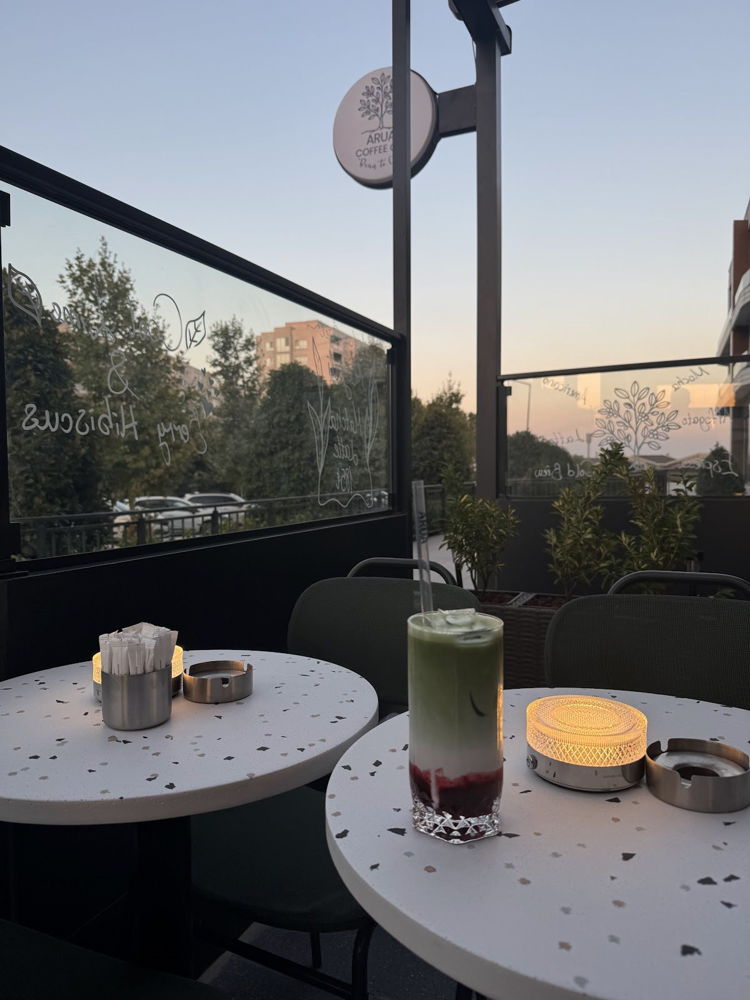

Google yorumu ★★★★★
“Sipariş ettiğimiz her yemek çok lezzetliydi. Ev yemeği tadında, özenle hazırlanmış ve porsiyonlar da gayet doyurucuydu.”ИринаYorumun tamamı

İnmari, Beylikdüzü
Özenle hazırlanan bir tabak.
Ardından iyi bir kahve.
Sentez Mutfak
Dünya mutfağından bir buluşma. Yeni bir lezzeti denemek ya da sevdiğiniz tabağa yeniden dönmek için.
Bir öğle molası, akşam yemeği ya da arkadaşlarla paylaşılan bir masa. ARUA’da kahveye ayırdığımız özeni sofraya da taşıyoruz.


Coffee & Sentez Mutfak
Kahve molası için de, yemekten sonra sohbeti uzatmak için de buradayız. O günün kahvesini seçin, biraz daha kalın.
ARUA’ya yol tarifiKüçük detayların yanında.
Duvarlardaki dokular, fincanın sıcaklığı, masaya gelen tabaklar. Marmara Mahallesi’nde, günün temposundan biraz uzaklaşalım.
Ziyaret öncesi bizi arayınGoogle yorumları
Google yorumu ★★★★★
“Sipariş ettiğimiz her yemek çok lezzetliydi. Ev yemeği tadında, özenle hazırlanmış ve porsiyonlar da gayet doyurucuydu.”ИринаYorumun tamamı
Google yorumu ★★★★★
“Biz filtre kahveyi denedik ve orada taze taze demlediler. Kahveleri gerçekten üst kalite ve önceden içtiğiniz kahveleri unutturuyor.”SBGTYorumun tamamı
Google yorumu ★★★★★
“İnanılmaz tatlı ve içten bir mekan. Tatlıları ve sandviçlerin lezzeti harikaydı. Özellikle lotus cheesecake favorim.”Hazal E.Yorumun tamamı
Google yorumlarından kısa alıntılar. Puan ve yorum sayısı 2 Kasım 2026 tarihinde kontrol edilmiştir.
Güncel çalışma saatleri, menü ve ziyaretinizle ilgili sorularınız için telefonla bize ulaşabilirsiniz.